APPROACH
In this project, we are interested in learning the 3D structure of complex indoor environments via view-synthesis. View synthesis allows generating images of a scene from different viewpoints. This is a highly challenging task as it requires developing algorithms capable of understanding the nature of 3D environments, e.g., the semantic information in a scene, the relationship between objects in a scene, and the layout of environments and occlusions.
As mentioned above, we build on prior work which focused on learning Structure-from-Motion (SfM) from single-view images in outdoor environments. We first asses the model's performance on complex indoor environments, and then explore methods for improving the results. Particularily, we are interested in explicitly incorporating semantic knowledge since it is crucial for scene understanding.
In the following sub-sections, we further describe the procedure followed in this project. Specifically, in Part 1, we described our methodology for obtaining the training data. Then, in Part 2, we describe the model and the loss functions we used.
Part 1: The Dataset
We use the Matterport3D (MP3D) dataset for our project and the Habitat simulation environment to generate egocentric trajectories for training, validation and testing. This section describes in more detail the procedure followed to generate said dataset.


1.1: The Scenes
Matterport3D (MP3D) [1] is a large-scale dataset introduced in 2017, featuring over 10k images of 90 different building-scale indoor scenes. The dataset provides annotations with surface reconstructions, camera poses, color and depth images, as well as semantic segmentation images. For our project, we use a different version of this dataset which can be obtained through the Habitat Simulation environment described in Section 1.2. It is important to note that one of the major differences between this version of the dataset and the original one is that in the former, images have lower resolution and quality. As it can be observed in Figure 1, the images exhibit visual artifacts, making the task of 3D learning more challenging.
As such, this particular version of the dataset has been generally used for training Embodied agents in various multi-modal navigation tasks [2, 3, 4]. We explore this version of the dataset since we are interested in equipping Embodied agents with 3D learning and understanding skills within this simulation platform.
1.2: Simulation and Trajectories
In order to generate the data for training, validation and testing, we used the Vision-and-Language (VLN) dataset presented in [2]. This dataset consists of instructions provided in natural language that describe a particular path to follow in a MP3D indoor environment. These instructions correspond with a trajectory in the environment which can be obtained by using a Shortest-Path-Follower (SPF) from the start and goal locations associated with the instruction. For this project, we are not interested in the language instructions. Thus, we do not provide details on how this dataset has been used to train instruction-following agents. However, we leverage the visual trajectories associated to such instructions for creating our dataset.
The VLN dataset described above was designed for the Habitat [5] simulation platform. Thus, we use [5] to collect the data for training. Briefly, Habitat is a highly efficient and flexible platform intended for embodied research. It allows researchers to easily design and configure agents and sensors, as well as AI algorithms for a diverse set of navigation tasks [2, 3, 4].
Specifically, we use a SPF, as described above, to get the sensor information
from the simulator based on the VLN dataset. We specifically, extract
RGB, depth and color images for each trajectory, as well as, relative
pose information. The SPF uses has an action space consisting
of four possible actions: MOVE_FORWARD 0.25m,
TURN_LEFT 15deg, TURN_RIGHT 15deg,
and STOP. An example of a resulting trajectory is shown
in Figure 1.
Table 1. shows statistical information about the dataset we obtained.
| Data Split | Num. Environments | Avg. Num. Trajectories per Environment | Total Num. Trajectories | Avg. Num. Steps per Trajectory | Total Num. Steps per Trajectory |
|---|---|---|---|---|---|
Train |
33 | 65 | 2,169 | 55 | 119,976 |
Val |
33 | 5 | 142 | 54 | 7,750 |
Test |
11 | 55 | 613 | 54 | 33,412 |
Part 2: Model
As mentioned before, we focus on learning the 3D structure of an indoor environment from video sequences. We follow prior work [6], which focuses on learning Structure-from-Motion (SfM) in outdoor environments. This model achieves the latter purely from training on unlabeled color images and through a view-synthesis objective function as their main supervisory signal.
In our project, we explore if explicitly incorporating semantic information, in the form of masks, enables the model to better understand and learn to model the 3D structure of a given scene. Our model jointly trains two neural networks; one in charge of predicting depth from a single-view image represented both in RGB and in semantic labels, and the other in charge of predicting the pose transformaton between two images. To train the model, we also use a view-synthesis objective for both the color images and the segmentations and a multi-scale smoothness loss. Section 2.1 and Section 2.2 provide more details on the model implementation, and Section 2.3 dives into the details of the objective functions.
2.1. Depth Network
The first component of the model is the Depth Network, a CNN-based model which takes as input a target image represented in color information and semantic masks and outputs the corresponding depth information. As shown in Figure 2, the Depth Network is comprised by two encoders, one for each input modality, i.e., color and semantic masks, and one decoder which uses the concatenated embeddings of each of the encoders to predict the corresponding depth.
2.2. Pose Network
The second component of the model is the Pose Network, which is also a CNN-based network. This module takes as input a short sequence of N images also represented in color and semantic masks. Here, one of the images in the sequence is the target image It and all other images are the sources Is. The model then outputs the pose transformation between all source images and the target image. Like the Depth Network, the Pose Network is comprised by two encoders, one for each input modality. Then, the final embeddings of each encoder are concatenated together and used to predict the pose transformations between the images. The model is shown in Figure 3.
2.3: Objective Functions
2.3.1: View Synthesis
The main objective function in this project comes from a view synthesis task: given one input view of a scene, \(I_t\), the goal is to synthesize a new image of the scene from a different camera pose. In [6], the synthesis process is achieved by predicting both the depth information of a target viewpoint, \(D_t\), and the pose transformations between the target view, \(T_{t \rightarrow n}\), where \(n\) is the sub-script of the nearby view, \(I_n\). Here, the depth and pose information is learned through the CNN-based modules, which were explained in the previous sections.
The view-synthesis objective is given by the following equation: $$ L_{vs} = \sum_{n} \sum_{p} | I_t(p) - \hat{I}_n(p) | $$ where \(p\) is a pixel index, and \(\hat{I}_n\) is a nearby image warped into the target's coordinate frame. To warp the nearby image to the target frame, we can project \(p_t\), a homogeneous coordinate of a pixel in the target image onto the nearby image by following the equation below, $$ p_n \sim K \cdot T_{t \rightarrow n} \cdot D_t(p_t) \cdot K^{-1} \cdot p_t $$ where \(p_t\) represents the homogeneous coordinates of a pixel in the target image, \(K\) is the intrinsics matrix, \(D_t\) and \(T_{t \rightarrow n}\) are the predicted depth and pose, respectively.
Now, the coordinate from the previous equation correspond to continous values. To obtain the value \(I_n(p_n)\) to represent \(\hat{I}_s(p_t)\), we follow two interpolation methods: 1) bilinear interpolation for color images, which linearly interpolates the top-left, top-right, bottom-left and bottom-right pixel neighbors, and 2) nearest interpolation for the semantic masks, to preserve the original label values.
Thus, in summary, the view-synthesis objective is applied to both the color images and the semantic masks by warping the source image into the target frame using the predicted depth and poses, as well as the corresponding interpolation method.
2.3.2: Artifact Mask
Unlike [6], the scenes in our indoor environments are assumed to be static, i.e., there are no dynamic objects at any point in a given sequence. However, existing challenges with the dataset include 1) occluding objects and 2) visual artifacts at certain viewpoints resulting from the low quality reconstructions of the images.
To deal with this, the Pose Network is coupled with an Artifact Network which is trained to predict a pixel mask, \(E_n(p)\) that represents whether a pixel contributes to modeling the 3D structure of a given environment. This mask is used to weigh each pixel coordinate in the view-synthesis loss as, $$ L_{vs} = \sum_{n} \sum_{p} E_n(p) | I_t(p) - \hat{I}_n(p) $$ To avoid the network to predict an all-zeroes mask, the objective is coupled with a regularization term, \(L_{reg}(E_n)\).
2.3.3: Large Spatial Regions
The final objective function is used to explicitly allow to propagate gradients from large spatial regions in the image, as opposed to only considering the 4 local neighbors of the pixel, as explained in Section 2.3.1. To do this, depth maps are predicted at different scales and the \(L_1\) loss of their second-order gradients is minimized as in [6].
The final loss then becomes: $$ L = \sum_{l} L_{vs}^{l} + \lambda L_{ms}^{l} + \beta \sum_{n} L_{reg}(E^{l}_n)$$ here, \(l\) is the index of the image scale, \(L_{ms}\) is the multi-scale loss and \(\lambda\) and \(\beta\) are weighing hyper-parameters.
 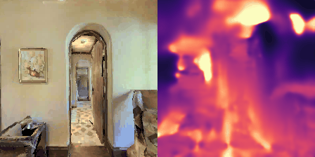
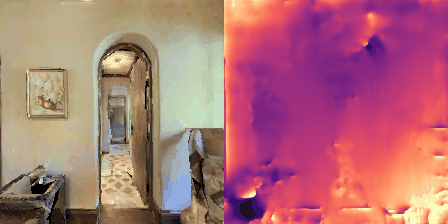
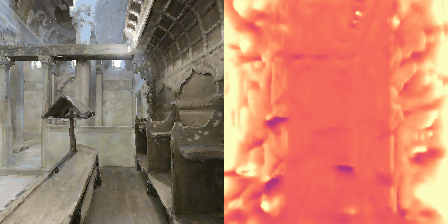
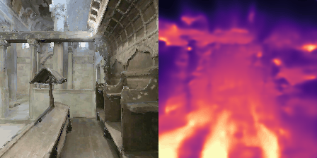
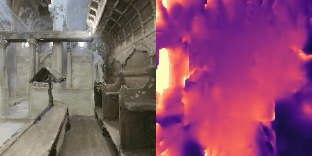
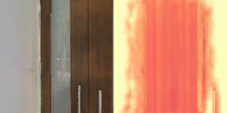
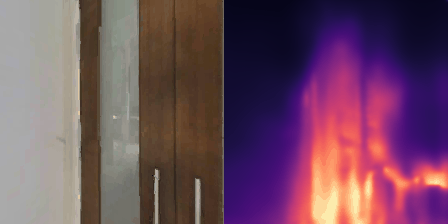
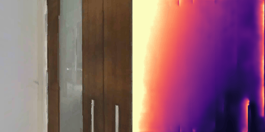
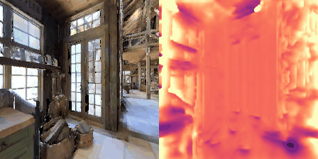
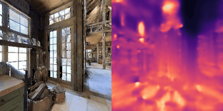
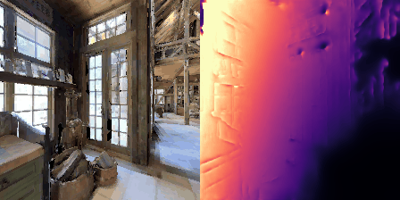
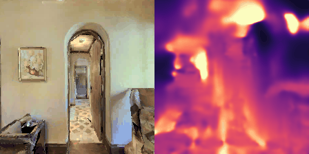
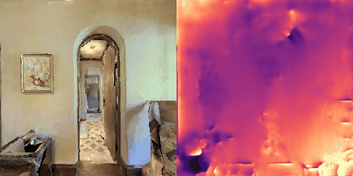
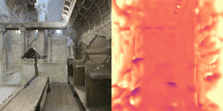
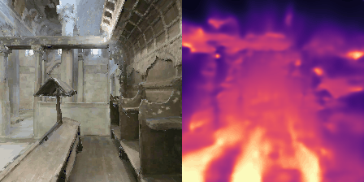
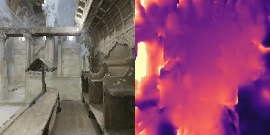
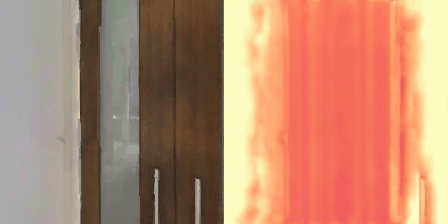
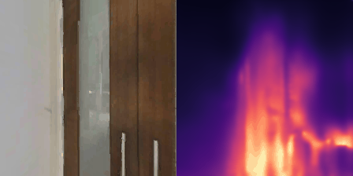
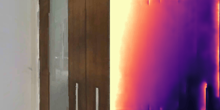
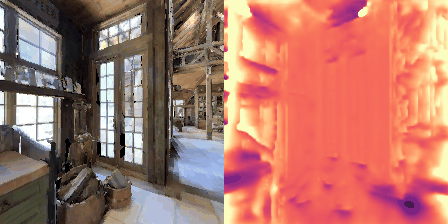
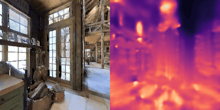
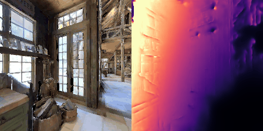


 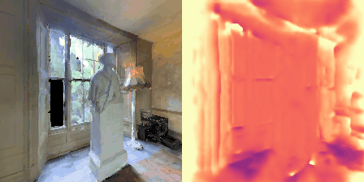
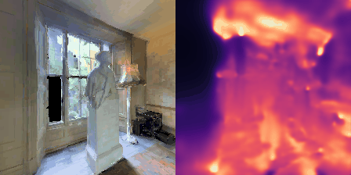
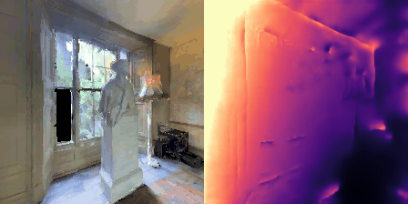
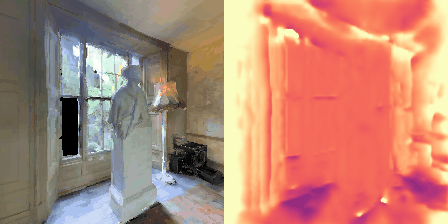
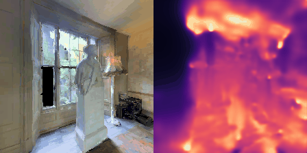
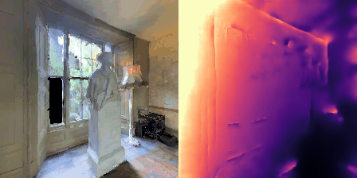
 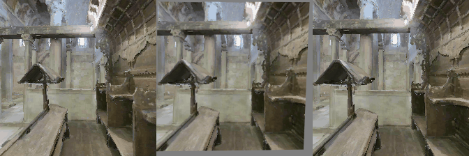
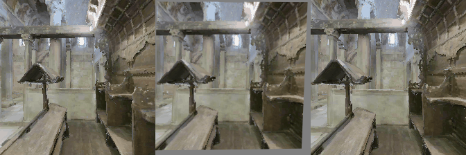


 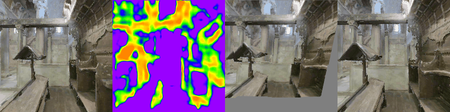
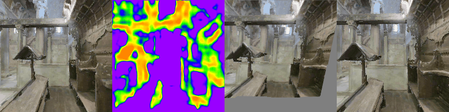